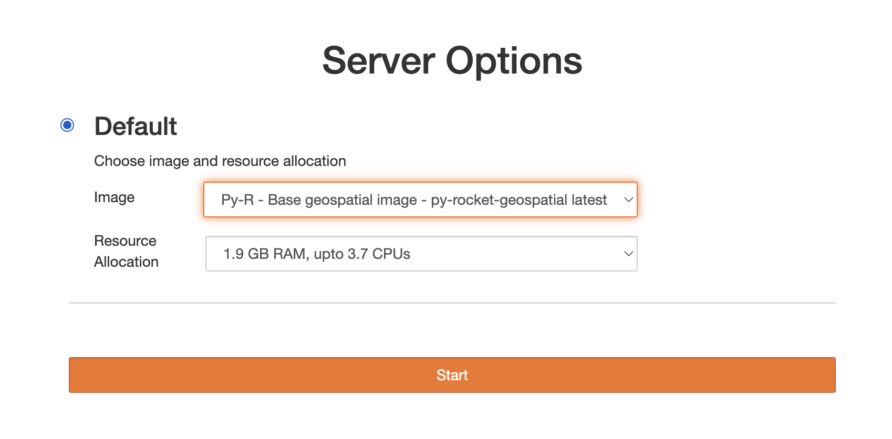
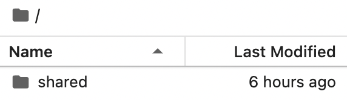

Log in to the JupyterHub
Everything in this tutorial runs on a JupyterHub in the cloud. You do not need to install anything on your own computer.
Everything on it goes: your home directory, the shared folders, and the scratch bucket. Before then, push your work to GitHub (Git and GitHub, with an agent), and download anything else you want to keep.
Start a server
Log in. Your username is your email address. The password is the one the organizers give you at the start of the hackathon; everyone uses the same one. Do not post it anywhere public, including GitHub.
Image: keep the default, a geospatial image with Python and R.
Size: pick the smallest machine. That is plenty for everything here. Larger machines cost more, so choose one only if you run out of memory.

Click Start. It can take a few minutes to start.
When it is ready you land in JupyterLab, on the Launcher. Next: Find your way around JupyterLab.
Your files
/home/jovyanis your home directory. Everyone’s home is called/home/jovyan(that is the Jupyter default), but yours is private, and it persists between sessions.shared/is read-only, with files the organizers have put there for you.shared-public/is read-write and visible to everyone. Make a team folder there. Agree with your team who edits what, because anyone can change anything in it.

Stop your server
When you are done for the day, stop your server. It shuts down after 90 minutes idle anyway, but a running server costs money. Stopping does not delete your work. It is like turning off your computer.
From the JupyterLab tab, choose one of these:
- File → Log Out
- File → Hub Control Panel → Stop My Server
Lost the JupyterLab tab? Go to https://workshop.nmfs-openscapes.2i2c.cloud/hub/home.
If the server crashes
This can happen when many people use a lot of memory at once. Go to File → Hub Control Panel, click Stop My Server, then Start My Server. You will not lose work, unless you were in the middle of uploading a file.
Getting help
- Ask in the hackathon channel, or ask a helper in the room.
- Problem with this tutorial? Open an issue in ocean-icechunks/2026-ioos-hackathon.
Adapted from NMFS HackDays 2025: Intro to JupyterHubs.